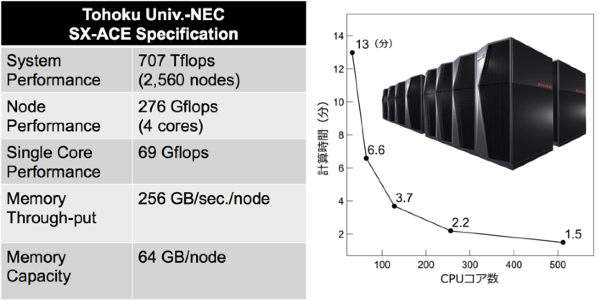
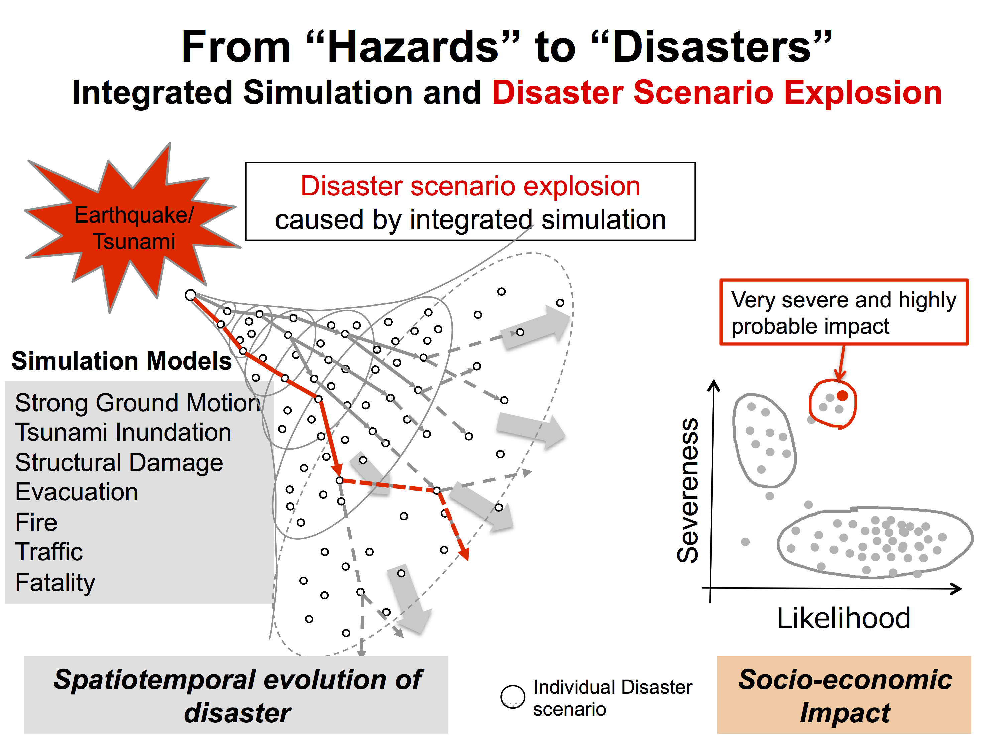
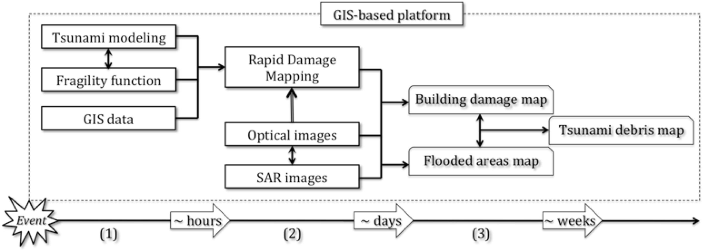
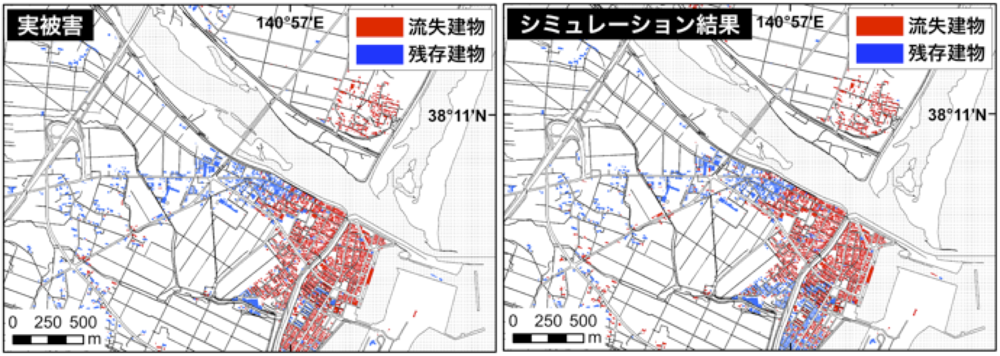
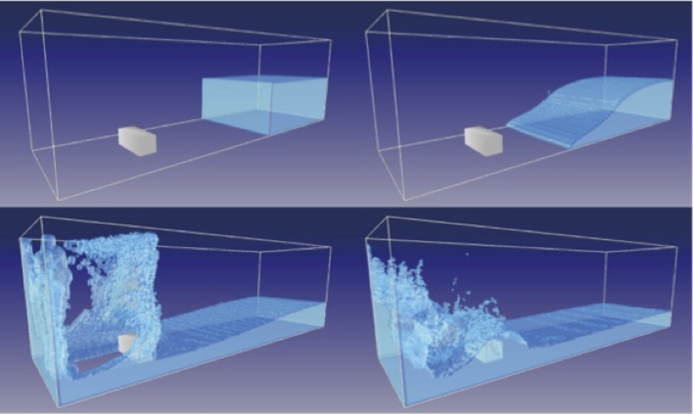
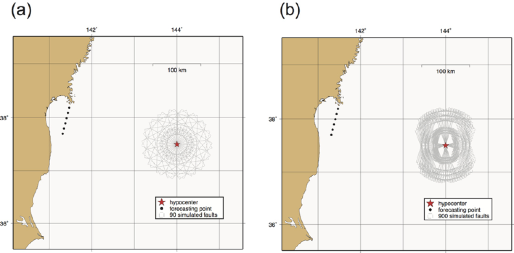

リアルタイムへの挑戦
約10分で津波波源を推定し、約10分で10mメッシュの浸水計算を行い、地震発生後すぐに行動につながる情報を届けます。
01 · リアルタイム評価
リアルタイムの地震情報とスーパーコンピュータを活用し、津波被害を迅速に推定する技術を開発しています。大学や産業界のパートナーと連携し、波源推定、浸水計算、建物の曝露、フラジリティ関数を組み合わせています。

02 · 大規模シナリオ
JST CRESTプロジェクトでは、災害シミュレーション、災害管理科学、数理科学、情報科学を結集しています。大規模な数値シミュレーションとリアルタイムのデータ同化により「シナリオ爆発」を探索し、最悪の被害を軽減しうる対策を見いだします。

03 · 国際的な応用
津波リスクの高い中南米諸国を対象に、リアルタイム計算、リモートセンシング、GIS、フラジリティ関数を組み合わせて近地・遠地の影響を評価し、広域の被害推定を支援します。

04 · 都市における津波の物理
密集市街地では、建物が流れの障害となり、浸水の進行とともに流失することがあります。時間発展型合成等価粗度モデルにより変化する都市の地表面を再現し、どの建物が、いつ、何棟流失するかを推定します。

05 · 次世代の手法
格子ボルツマン法は、大規模並列計算に適した完全陽的スキームです。実用的な精度を保ちながら、市街地への津波遡上をより高速にシミュレーションする可能性を探究しています。

06 · 不確実性と早期警報
地震発生直後の波源推定には不確実性が伴います。多数の断層配置の可能性を探索することで、数分以内に信頼できる最悪シナリオの津波を推定し、迅速な被害評価と避難の意思決定を支援します。
